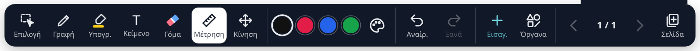
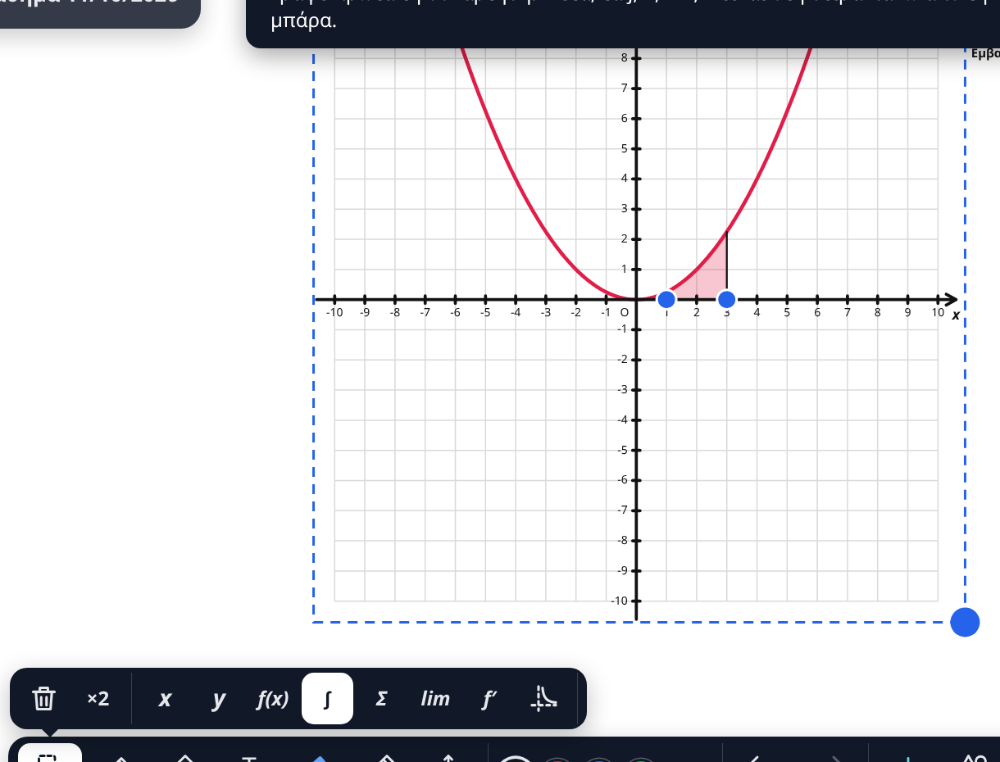
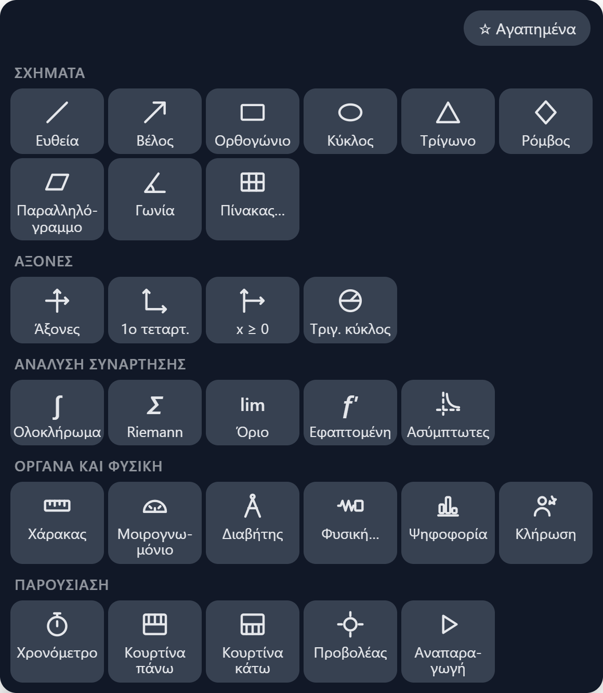
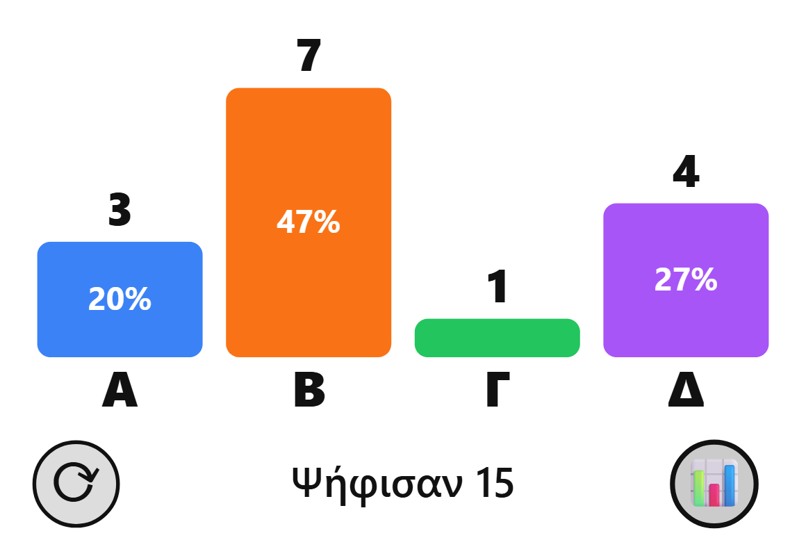
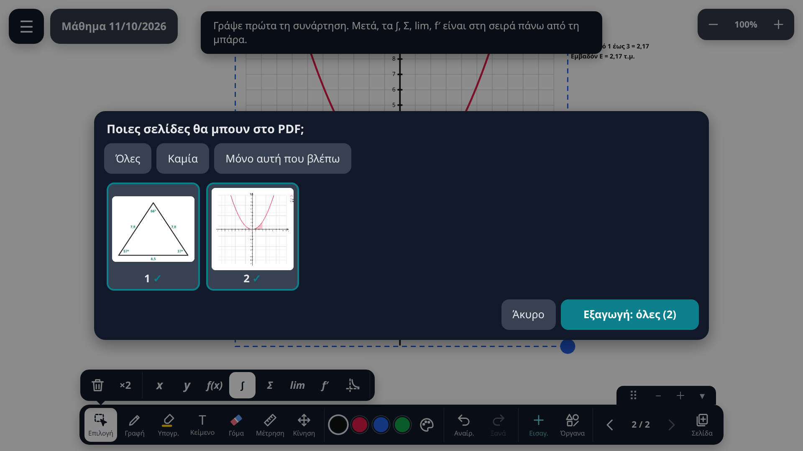
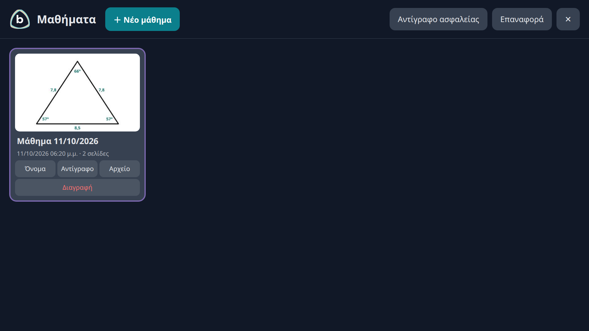
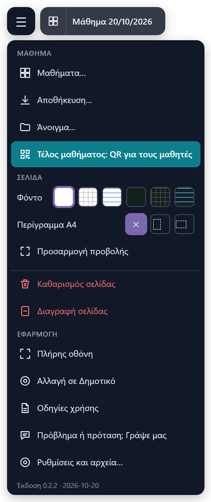
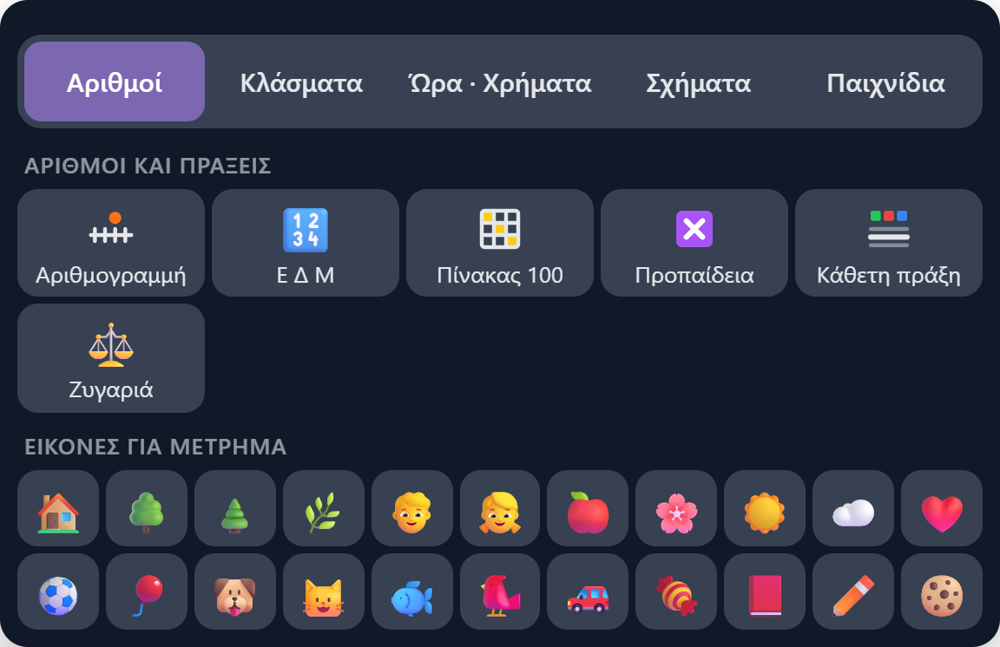

PrismaBoard
1. Getting started
PrismaBoard runs in your browser (Chrome or Edge). No account and no installation needed.
- Address: prismaboard.klabs.gr
- Offline: once it has opened one time with internet, it also opens without it. Internet is needed only for handwriting recognition and for uploading to Google Drive.
- On Windows it is also available as a standalone app, which can also write on top of other programs.
2. The screen at a glance

| Button | What it does |
|---|---|
| Select | Grab, move, resize, rotate or delete anything on the page. |
| Pen | Writing. Tap it again for thickness, the laser pointer and automatic recognition. |
| Highlighter | Always draws a straight line and doesn't get darker if you go over it again. |
| Text | Type text with a keyboard. |
| Eraser | Erases part of a stroke, a whole stroke, or the whole page. |
| Measure | Lengths, angles, area and perimeter on shapes. |
| Pan | Drag the page around with one finger. |
| Colors | Four quick colors and a palette for any other. |
| Undo / Redo | Undo and redo your most recent actions. |
| Import | Image, PDF or Word file, screenshot, paste, page from a template. |
| Tools | Shapes, axes and functions, geometry instruments, physics, presenting. |
| ‹ 1 / 1 › · Page | Previous and next page, new page. |
At the top left are the ☰ menu and the lesson name. At the top right is the zoom.
3. Writing and erasing
- Write with the stylus or with your finger. Two people can write at the same time.
- Thickness: tap Write again and pick one of the dots.
- Neater handwriting: anything you write with the pen loses the shakiness of your hand as soon as you lift the stylus, and the stroke gets slightly thinner at the start, at the end and wherever you wrote fast, like a real pen. The letters stay handwritten; no internet needed. Turn it off in ☰ → Settings and files… → Neater handwriting.
- Tidy up: select what you wrote (text, an equation, a chemical reaction) with the lasso and tap Tidy up in the row above the toolbar. Each line gets straightened, words that drift up or down move onto the line, and the gaps between words become even. Exponents, subscripts (H₂O) and fractions keep their place. The writing stays handwritten; if you don't like it, one Undo brings it back.
- Straight line by hand: draw the line and hold the stylus still at the end. It turns into a proper straight line. While you are still holding the stylus, its end follows your hand and the angle with the horizontal is shown. Near 0°, 15°, 30°, 45°, 60°, 75° and 90° the line "snaps" exactly to that angle and the label turns green. The line and arrow from Shapes do the same. The same works for circles, rectangles, triangles, rhombuses and parallelograms: draw them roughly and hold the pen still at the end.
- Laser pointer: inside Write. Whatever you draw fades away on its own after a moment.
Eraser
- Tap Eraser again to choose: erase only what is inside the circle, or the whole stroke you touch.
- With your palm or fist you can erase without switching tools. A red circle appears.
- Images, axes, the unit circle and physics diagrams can't be erased with the eraser. Select them and tap the trash can.
- The whole page: ☰ → Clear page.
4. Moving around and zoom
- Two fingers: pinch to zoom in or out, drag to move. Works with any tool.
- Buttons at the top right: − and +. Tapping the percentage in the middle centers the page on the screen.
- Mouse: the scroll wheel zooms.
- Lost? ☰ → Fit to screen.
The page has no edges: you can keep writing in any direction.
5. Select, move, rotate
With Select, tap an item to grab it, or drag around several items to grab them together.
- Move: drag the selection.
- Resize: drag the blue dot at the corner of the frame.
- Rotate: drag the round handle above the frame. Near 15°, 30°, 45° and so on it "snaps".
- Rotate with your whole hand: with something selected, place four or five fingers anywhere on the board and turn your hand, as if turning a big knob. The selection rotates around its center and "snaps" every 15°. It also works for a group selection; one undo turns it back.
- Rotate around a corner: tap the rotation handle once without dragging. The center moves to a corner of the shape (a white circle with a blue dot). Each tap moves it to the next corner, and finally back to the center.
- With something selected, the second row above the toolbar shows the actions: Delete, Duplicate, Bigger, Smaller, Mirror, To page (section 10), and next to them the options of the object itself (for example, of the axes). If you have selected handwriting, it also has To text, To formula and Solve (section 9). It is always in the same place and never covers the board.
6. Shapes and measurements
At the top of Tools, the Recent row keeps the last six you used.
The shapes are in Tools: line, arrow, rectangle, circle, triangle, rhombus, parallelogram, angle. Pick one and drag on the page.
Measuring a shape
- Tap Measure.
- Tap the shape. Its lengths and a small menu appear.
- Turn Lengths, Angles, Area, Perimeter on or off.
Measuring on axes
A shape that sits on axes is measured in the units of the axes, not in centimeters. Horizontal sides are in x units, vertical sides in y units, and the area in their product (for example, a rectangle under a v–t graph gives the displacement). A line shows its slope, m. When the two axes have different scales, slanted sides show only their slope, and angles and perimeter are not shown.
Changing a measurement
Tap the number. A keyboard opens:
- A number: the side becomes that many centimeters, or the angle that many degrees. The shape changes.
- A letter or a unit (a, θ, 5 m): only the label changes.
- Empty: the real measurement comes back.
Table, determinant, matrix
Tools → Table…. Choose a style (a table with lines, a determinant with two vertical bars, a matrix with brackets) and tap the cell that gives the number of rows and columns you want, up to 6 × 6. Write inside the cells with the pen. The eraser erases what you wrote without touching the table. To delete the table itself, select it and tap the trash can.
Angle between two lines
With Measure, tap inside the opening of the angle. It works on lines with a common vertex, on lines that cross, and on lines that almost touch. It does not measure freehand pen strokes that haven't become straight lines.
Erasing measurements
Run the eraser over the number or the arc. The measurement is erased; the shape stays. The same goes for the angle that appears on its own when a line or an arrow starts from the start of another: the angle is erased, the lines stay. To hide it or bring it back, select the line and tap Angle in the row above the toolbar.
Resultant of two arrows
Select two arrows with a common start (or an angle) together and tap Resultant in the row above the toolbar. If you later change one of the two arrows, the resultant follows.
Unit circle
Tools → Unit circle. Drag the point around the circle and see the angle in degrees and in radians.
7. Functions and calculus
- Tools → Axes (or 1st quadrant, x ≥ 0).
- With the axes selected, tap f(x) and type the function on the app's keyboard.
- Tap ✓. You can put several functions on the same axes.
Scale: if a function doesn't fit on the axes (for example, y = −200x) or comes out very flat, the vertical axis changes its scale on its own (for example, 200 per line) so the whole graph is visible. Common curves (x², 1/x, sin x) stay at 1 per line. For the horizontal axis, tap ×1 with the axes selected: a small bar opens and you choose how much one line is worth. The top row multiplies (×2, ×5, ×10, ×50, ×100) and the bottom row divides (÷2, ÷5, ÷10, ÷50, ÷100, so one line is worth 0.5 down to 0.01). ×1 takes you back to the original.
Merging two graphs: drag the axes of one graph onto the axes of the other and let go. Its functions move to the first axes in a different color, and the second axes go away. Undo separates them again.
Axes without numbers: with the axes selected, tap 123. The numbers disappear and you write your own values with the stylus (for example, in steps of 10 or 20). New axes come out the way you left the last ones.
| You type | Meaning |
|---|---|
| x²-3x+2 · 1/x · √x | Polynomials, fractions, roots |
| sin( · cos( · tan( · cot( | Trigonometric functions |
| ln( · log( · e · π | Logarithms and constants |
| a · b · c · k · λ · ω | Parameters: a slider appears for the value of each one |
• Points shows roots, extrema and intersection points.
Calculus tools
They are in Tools and, with the axes selected, in the row above the toolbar.
| Button | What it shows |
|---|---|
| ∫ | A definite integral as an area. Drag the two bounds along the axis. Second tap: the region between two functions; the bounds move by themselves to their intersection points and the area is shown. When you drag them, they "snap" to the intersection points (or to the roots). |
| Σ | Riemann sums. Each tap doubles the rectangles: 4, 8, 16, 32. |
| lim | Limit at a point. Drag the point along the curve toward x₀. |
| f′ | Tangent line and derivative. Second tap: the secant line as well. |
| Asymptotes | Vertical, horizontal and slant. |

8. Tools, physics, presenting
Geometry instruments
- Ruler and Protractor: move and rotate them on the page.
- Compass: draws circles and arcs.
- Random pick: picks a random student from the class, or a number if the class has no names (section 11).
- Poll: a quick question for the whole class, with no phones and no connection. Write the question on the board and put the Poll next to it. Use − and + to set how many choices there are: two (✓ and ✗, for yes/no or true/false) up to five (A B C D E). Each tap on a color counts one vote: students come up and tap, or you count hands and tap yourself. While voting is open, only the number of votes is shown, so no one is influenced. 📊 shows the bar chart with counts and percentages; ⟳ resets it for a new question.
Physics
Physics… opens ready-made diagrams. The springs come alive: pull the mass and let it go to make it oscillate. With a spring selected you can show the natural-length position, the equilibrium position and ±A, add damping, or stop it.
Presenting
- Timer for timed exercises.
- Curtain from top and from bottom: they hide part of the page and you drag them by the handle. You can also write on them with the pen, like a second board.
- Spotlight: lights up just one spot.
- Replay: plays the page back step by step, in the order it was written.


9. Text and handwriting recognition
With Text, tap on the page and type.
Handwriting recognition turns handwriting into clean text or a typeset math formula:
- On demand: select the handwriting and, in the row above the toolbar, tap To text or To formula.
- Automatically: inside Write, turn on Aa or √x. Whatever you write is converted as soon as you stop.
Solving an exercise: select an equation or another exercise with the lasso and tap Solve. The solution is written out in print below the handwriting, which stays as it was. The solution is written by an AI service and may contain mistakes: check it before you show it to the class.
Checking a student's solution: select a student's solution with the lasso and tap Check. Below it, a note appears in green saying it is correct, or in red saying which line has the first mistake and what the correct form is. This is also written by an AI service: look at it yourself first.
Graph from the lasso: select a function or equation with the lasso (handwritten or from Word/PDF) and tap Graph. Axes with its curve are added. If the function has a restriction (for example, 0 ≤ t ≤ 5), it is drawn only there, and the axes are chosen to match: only the right half when x ≥ 0, only the 1st quadrant when the values are positive too. If the domain is large (for example, 0 ≤ t ≤ 50), the horizontal axis changes scale so all of it fits. Piecewise functions are added with all their pieces. Check that the formula next to the axes is the one you wrote.
Diagram from a word problem: select the text of a physics problem with the lasso (typed, handwritten or from Word/PDF) and tap Diagram. A simple diagram appears below the text: the ground or the inclined plane, the bodies, the vectors given in the problem (forces in red, velocities in blue) and the labels of the given data (m = 2 kg, θ = 30°). It does not solve the problem and does not show what is being asked. If the problem doesn't need a diagram, it says so and adds nothing. The diagram is made of ordinary board items (lines, arrows, rectangles, text): it comes in fully selected so you can drag it wherever you want, and then you can fix or delete each piece separately. One ↶ takes it all back. It is made by an AI service and is a rough draft: it often needs a fix to a position or a label, so look at it before you show it.
Questions from Word or PDF: Solve and Check see everything inside the area you circled with the lasso, even if it is part of a page that came from Word or PDF. Circle the question together with its choices: Solve writes which one is correct and why, and Check says whether the choice you marked with the pen is correct.
How to get a Gemini key (once, about 3 minutes)
- On a computer, open aistudio.google.com/apikey and sign in with your Google account. A personal account works best: on school accounts the service is often turned off by the administrator.
- The first time, accept the terms of use. Google AI Studio then creates a first key on its own.
- If the "API Keys" list is empty, click Create API key, choose the project it suggests and confirm.
- Click the key and then Copy. It is a long string of letters and numbers.
- In PrismaBoard: ☰ → Settings and files… → Handwriting recognition and solutions (key)…. Leave "Service" set to Gemini, paste into the API key field and tap ✓ Save. Leave "Model" as it is.
- Try it: write a word with the pen, select it with Select and tap To text.
If the classroom board has no keyboard, send the key to yourself (for example, by email), open it on the board and copy it from there. You can use the same key on as many devices as you like.
- Cost: the key comes with free usage, limited by requests per minute and per day, which is usually enough for a lesson. If you see a message about a limit, wait a minute and try again. You are charged only if you turn on billing in your Google account yourself.
- The key is like a password: don't show it on the classroom screen and don't give it to others. If someone sees it, delete it on the same Google AI Studio page and create a new one.
- What is sent: each time you tap recognition, solve or check, the image of the area you selected goes to Google. Don't include students' names or personal details in the selection.
- On a shared board: when you are done, Delete key in the same window removes it from the device.
10. Pages, import, background
- New page: Page. Use ‹ › to change pages.
- Delete page: ☰ → Delete page. The page is deleted right away; if it was a mistake, tap Undo in the message that appears at the top for a few seconds.
- Background: ☰ → white or dark, plain, with a grid or with notebook lines.
- A4 outline: ☰ → "A4 outline" row → portrait or landscape. A faint dashed frame at real A4 size appears on the board (the grid is 1 cm), so you can line up what will be printed. The PDF and the PNG image then come out exactly the size of the frame, and anything outside it is left out. If a page has nothing inside the frame, it comes out as before, with all its items. ✕ removes it.
- Move to another page: select what you want and tap To page in the row above the toolbar. Choose the page number or ＋ New. The items go to the same position on the other page and the board goes there too. One Undo brings them back. To copy instead of move, tap Duplicate first.
Import (the "Import" button)
- Image, PDF or Word (.docx) from a file. You can also drag the file onto the board.
- Screenshot: captures another window and puts it on the page.
- Paste an image from the clipboard.
- From another app on the board or tablet (Android): with PrismaBoard installed, take a screenshot (or open an image or a PDF), tap Share and choose PrismaBoard: it goes onto the page of the lesson you had open.
- Page from a template: ready-made pages with one tap (Given – Find – Solution, Two columns, Studying a function; in Primary school: Fractions, Numbers to 1000, What time is it?, Times tables). You can also save your own page as a template to reuse it.
Choosing pages from a PDF or Word file
When the file has more than one page, a window with thumbnails opens. Tap a page to leave it out or put it back, then tap Import. Each page of the file becomes one page of the board, and you write on top of it.
Only .docx files open from Word. The page layout may differ slightly from what you see in Word. If you want exactly the same look, save the document as a PDF.

11. Lessons and saving
Each board is a "lesson" with a name. It saves itself on the device while you work.
Where your lessons are
| Where | How it gets there | How to open it |
|---|---|---|
| On the device | Automatically, as you write. No button needed. | From the library, ☰ → Lessons… |
| On Google Drive | ☰ → Save… → To Google Drive (the open lesson), or ☁ All to Drive in the library | ☰ → Open… → From Google Drive…, from any of your devices |
| In a file | ☰ → Save… → To disk, as a file | ☰ → Open… → From disk, from a file… |
From the board to your laptop and back, with Google Drive
- On the board: ☰ → Save… → To Google Drive. The lesson is uploaded to your Drive, in the folder PrismaBoard/B2 (the folder of its class; with no class, in PrismaBoard). The first time, you sign in with your Google account. The file is private.
- On the laptop, with the same account: ☰ → Open… → From Google Drive…. You see the lessons by class, with a date and a label: not here, newer on Drive, newer here or same as here. Tap one and it opens.
- When you are done, again Save… → To Google Drive. On the board, Open… → From Google Drive… brings the changes into the same lesson; no second copy is made.
Next to the lesson name: ☁ ✓ means it is the same as on Drive; ☁ ↑ means it has changes that haven't been uploaded (tap it to upload them). If the device has a newer version than the one you are opening, the newer one is kept and the message offers Open the older one as a copy. The same applies to lesson files: they reopen as the same lesson, with their name and class.
The library
- Library: tap the icon with the four squares, to the left of the lesson name, or ☰ → Lessons….
- Rename: tap the lesson name and type the new one.
- New lesson, Name, Duplicate, File (saves it to a file, in the class folder) and Delete for each lesson. The card also shows ☁ ✓ or ☁ ↑ for Drive.
- Classes: with Class on a lesson, you write which class it belongs to (for example, B2). The classes then appear above the lessons: tap one to see only its lessons. A new lesson you create there goes into the same class.
- Students in the class: with a class chosen, tap ＋ Students in B2 (on the right, in the row of classes) and type or paste the names, one per line. From then on, in every lesson of that class, Random pick picks a name instead of a number: everyone gets a turn before anyone comes up again, and its ⟳ starts a new round. The names stay only on the device; they are included in "Backup to file", not on Drive.
- ☁ All to Drive: uploads every lesson that changed to your Google Drive, each into its class folder. It also happens automatically every time you send a lesson to students with a QR code.
- ☁ Open from Drive…: the same as ☰ → Open… → From Google Drive…. If there are many newer lessons on Drive, Get all newer brings them all at once.
- Backup to file: downloads all lessons into one file. With Restore from file you load them again, on another device too.

"What are we doing today?"
The first time you open the board each day, it asks where you want to start: Continue where you left off (the last lesson), ＋ New lesson next to each class (it gets a name like "B2 10/13/2026" that you can change any time), the last lesson of each class, or All lessons. Tapping outside the box closes it and you stay in the lesson that was open. It doesn't come up again the same day. If you don't want it at all, turn it off in ☰ → Settings and files… → "What are we doing today?" on the first launch of the day.
Lessons with lots of photos or PDF pages save just as fast as empty ones: images are written to the device once, not on every change.
12. Export and sharing with students
- PDF: ☰ → Save… → To PDF…. Choose which pages to include. The Only the one I'm viewing button keeps only the current page.
- Image: ☰ → Save… → Page as PNG image, for the current page.
- Lesson file: ☰ → Save… → To disk, as a file. It opens again in PrismaBoard with Open… → From disk, from a file…, as the same lesson, and you keep working on it.
- Logo on the PDF: turn it on or off in ☰ → Settings and files… → Logo on PDF pages.

A folder for each class
The PDFs, lesson files and images of a lesson that belongs to a class go into the folder PrismaBoard\B2 (for B2), with a name like B2 – Fractions 17-10-2026.pdf. If you save the same lesson again on the same day, the file is overwritten.
- Windows app: straight into Documents\PrismaBoard\B2. The message has Open folder.
- Chrome or Edge on a computer: the first time, it asks where: 📁 Choose folder (for example, Documents, where the PrismaBoard folder is created) or To Downloads. You can change it in ☰ → Settings and files… → Folder for lesson files. Every so often the browser asks for permission again; then the file goes to Downloads and the message has 📁 Also to the folder.
- Android (for example, interactive displays): the browser can't create folders, so everything goes to Downloads, with the class at the start of the name so files are easy to tell apart.
- Google Drive: if ☰ → Settings and files… → Files also to Google Drive, in the class folder is turned on, every PDF and PNG is also uploaded to PrismaBoard/B2 on your Drive (private, only for you). The lesson file is uploaded as the lesson itself on Drive, just like Save… → To Google Drive. If the board isn't signed in to Google, the message has ☁ Also to Drive. The PDF from "End of lesson" goes into the same folder.
End of lesson: a QR code in one tap
☰ → End of lesson: QR for students. The whole lesson becomes a PDF, it is uploaded to your Drive, and the QR code appears large on the screen, with no questions asked. The first time, you sign in with your Google account. While it's at it, it also uploads backups of the lessons that changed.
Sending with a choice of pages
- ☰ → Save… → To students, choosing pages…
- Tap Upload to Drive and QR. The first time, you sign in with your Google account.
- Choose pages. The PDF is uploaded to the "PrismaBoard" folder on your Drive.
- Tap Big QR. Students scan it with their phones and open the lesson on a PrismaBoard page, with a Download PDF button. If your account doesn't allow sharing by link (for example, a school account), the QR code points straight to Drive.
The app sees only the files it uploaded itself, not the rest of your Drive. Anyone who has the link or the QR code can see the file. You can stop sharing from Google Drive.
Without Drive: Share the PDF downloads the file, or opens the device's share sheet where there is one.
13. Make the toolbar your own
The small handle at the top right of the toolbar has four buttons:
- ⠿ Move: drag the toolbar wherever suits you. At the side of the screen it becomes vertical.
- − + Size: smaller or larger buttons.
- ▾ Collapse: hides the toolbar so the whole screen is free.
Printing: right-click (or long-press) and choose Print from the browser menu, or press Ctrl+P. All the pages of the lesson are printed, always on white paper: on a dark board, white writing turns black and light colors get darker. The toolbar isn't printed and the logo goes at the bottom right.
From ☰: Exit, at the end of the menu, saves the lesson and closes the app. It appears only when PrismaBoard is installed (Windows app, Android or computer app); in a regular browser tab you just close the tab, and the lesson has already saved itself.
From ☰: Full screen. To leave it, tap the button with the four arrows that appears at the top right, next to the zoom (no Esc key needed). From ☰ → Settings and files…: Labels under icons.
14. Primary school
PrismaBoard has two modes: Primary school and Secondary school. You choose one on the first screen and can change it any time from ☰ → Switch to Primary school (or Switch to Secondary school). In Primary school the toolbar is simpler, with picture icons, and Tools has the tools for the younger grades, without axes, functions and physics.
The Primary school Tools are split into five tabs: Numbers, Fractions, Time · Money, Shapes (together with the ruler, protractor, compass and curtains) and Games (together with the rewards). The tab you opened last stays open, and Recent is always shown above the tabs.
Spelling with the little monster 👾
Tools → Games → Spelling. The game opens large, over almost the whole screen. It is played with a list of words or short sentences: the student writes each one, fixes whatever the first check points out, and any mistakes that remain are eaten by the little monster, which grows a lot with every mistake it eats. At the tenth mistake it becomes huge, fills the screen and… eats the student: darkness inside its mouth, which opens and closes with a "CHOMP!" at every bite, and a burp at the end. Then it shrinks back down and the list starts over.
- Choose words. At the top, choose the language, Ελληνικά or English. Then:
- a grade, from 1st to 6th: 8 ready-made words are picked at random. Since no one has seen them before, each Greek word is first shown in blue; the children read it, and it hides as soon as the first letter is tapped ("look, cover, write"). For English words, the meaning is shown in Greek.
- or ✏️ 🎤 My own words: a large box opens where you type or paste the words (from Word, email, Excel), with their accents: separated by commas, one per line, or simply by spaces if they are single words. Numbering and bullets are ignored. Up to 20 words, each up to 40 letters. They are shown as dots so the students can't see them; 👁 shows them. With 🎤 you say them instead of typing: each time you tap it and speak, one word or sentence is added. A list can have both Greek and English words.
- My lists: type a name (for example, "Spelling Grade 2 – Unit 3") and tap 💾 Save or go straight to ▶ Start. The list is kept on the device and next time it appears at the very top of the same window: one tap and it's ready. × (two taps) deletes it. For 10 random words, tap 🎲: the lists at the top get a checkbox ☐, and with each check, 10 random words from all the checked lists go into the box. Another 🎲 gives ten different ones; tapped with no list checked, it closes. The random ten never overwrites any list. ⬇ All lists to a file downloads them into one file for colleagues or another board, and 📂 Lists from a file brings them back; it also accepts a plain text file (.txt, .csv), which becomes one list named after the file. The lists are also included in the lessons' "Backup to file". With ☁️ To Google Drive they are all uploaded in one file ("Spelling lists") to the PrismaBoard folder on your Drive, and with ☁️ From Google Drive they come to another device or another board with the same Google account. Uploading doesn't delete lists that exist only on Drive (from another device): it keeps them and brings them here too. The app sees only the files it uploaded itself on Drive; a list from a colleague needs 📂 Lists from a file.
- The student writes in one of two ways (switched with the third button, before starting to write):
- ⌨️ With keys: the keys are in the positions of a regular keyboard, so children also learn the layout. For Greek words, the accent is typed as on a computer: first the orange ΄ (to the right of λ) and then the vowel; a second tap on ΄ gives a diaeresis (ϊ, ϋ) and a third gives accent plus diaeresis (ΐ, ΰ). For an English word the keys become English (QWERTY). To change a letter in the middle, the student taps it (it turns blue) and taps the correct one; ⌫ deletes the selected letter or the last one. No internet or key needed.
- ✍️ By hand: writes with the pencil inside the frame. If there is internet and the key from section 9, the handwriting is read by the recognition service when checking. Otherwise, the correct word is shown above the handwriting, the class compares them, and you tap ✓ Correct or ✗ Wrong.
- 🔍 Check, in two steps. The first time, the little monster "sniffs out" the mistakes, goes and eats them one by one (and grows): where each mistake was, an empty box is left, without showing the correct letter; the same where a letter was missing, while an extra letter simply disappears. The student writes the correct letter in the empty boxes (the first one is already selected) and taps 🔍 Check again. Then any mistake that is still there gets eaten by the monster too: the correct letter is left in its place in green, and underneath, crossed out in red, what had been written.
- ▶ Next word. At the top, one dot per word shows how it went: yellow = correct the first time, green = correct after fixing, purple = eaten by the monster. After the last word the results appear, with ↺ Same words again and ✏️ New words.
The word is spoken: the device says each new word out loud, and 🔊 repeats it as many times as needed. 👁 shows the correct word whenever needed (and hides it again). ✏️ Words goes back to the start for other words.
English with the meaning in Greek: with the ready-made English words, the student sees the Greek word ("Write in English: γάτα"), hears it in English and writes cat. The meaning is shown large on the line until the student starts writing, and then stays below. For your own words, write the meaning after =, - or :: apple = μήλο, good morning - καλημέρα, or paste two columns from Excel (English | Greek); English words that are in the ready-made lists get it automatically.
Everything counts, just like in a notebook: a wrong vowel (in Greek: ι, η, υ, ει, οι · ο, ω · ε, αι), an accent that is missing or on the wrong letter, σ instead of ς at the end, a missing or extra letter. Capital letters and punctuation don't count.
Words from the board: write the words on the board (with Text or by hand), select them with Select or the lasso and tap 👾 Monster. The word window opens with them inside, so you can correct or save them, and ▶ Start begins a new game. Handwriting is read by the recognition service (needs a key); typed text is read without a key.
Practice with 🎯
The clock, the fractions, the times tables and the balance scale have a small 🎯 that turns them into an exercise for a student at the board:
- Clock: 🎯 (top right) writes a time under the clock, for example "Show 7:45". The student drags the hands; when they are left at the correct time, a green ✓ appears and confetti falls. Tapping 🎯 again gives another time; tapping the time box ends the exercise.
- Fractions (pie, bar, pizza, chocolate): 🎯 empties the shape and writes a fraction, for example 3/8. The student colors in pieces; when the right number is reached, the fraction turns green with a ✓ and confetti falls. Another tap gives a different fraction; + and − end the exercise.
- Times tables: the 🎯 is in the top left corner of the table and writes a product there, for example "Find 42". The student taps the box that gives it (6×7 or 7×6); wrong boxes simply open and show their own product. On the right one confetti falls, and another tap on the corner gives a different product. Tapping the corner before it is found ends the exercise.
- Balance scale: 🎯 (top left) puts two weights in the left pan and writes "Balance the scale". The student adds weights only on the right; the total is always over 10, so at least two are needed. When it balances, confetti falls and another tap gives different weights. Tapping before it balances ends the exercise and the weights on the left are yours to change again.

The tools respond to a tap, whatever tool you are holding (pencil, highlighter, Select): tapping their buttons doesn't write on the board. To move or delete them you need the Select tool. Drag them, resize them from the corner and delete them like any shape. Tapping a button of a tool (a letter, +, a piece) doesn't select it; to select it (and bring up the bar with Delete and ×2), drag it a little, or tap a part of it that isn't a button.
Sounds, motion and celebrations
In Primary school the tools "come alive": the balance scale sways before it settles and goes "ding" when it balances, the die rolls, the random pick spins through the numbers with a drumroll, the bricks go "tock". In hangman a correct letter "pops" into place and a wrong one shakes the little figure; when the word is found, confetti falls. Star, Smiley and Well done! also bring confetti when you put them on the board.
The sounds are quiet; you set the volume on the board itself. From ☰ you can turn off all Sounds or just the "click" on tool buttons, and the choice is kept on each device. No internet needed. Secondary school has none of these.
| Tool | How it works |
|---|---|
| Number line | ⟳ changes the range: 0–10, 0–20, 0–100, −10 to 10, 0–1 in tenths. Draw the "jumps" with the pen. |
| H T O | Base-ten blocks for hundreds, tens and ones. ＋ Thousands at the bottom left adds a column for thousands (red cubes) and, with a second tap, for ten thousands, up to 99,999; − column at the bottom right removes them. Each column's + and − add or remove. If you go over 9 ones, they reset to zero and one ten is added (the same from tens to hundreds); if you subtract from 0, it "borrows" from the column on the left. Tapping the number at the bottom hides it ("What number is it?"). |
| Hundred chart | Tap numbers to color them (multiples, even numbers, patterns). |
| Times tables | The products are hidden. Tap a box to show it; tap again to hide it. |
| Column arithmetic | A grid with Th H T O columns and a row for carrying. Write inside with the pen. |
| Balance scale | Under each pan are all the numbers from 1 to 10: blue ones put a weight on the left, orange ones on the right (up to 12 weights on each side). The scale tips toward the larger total and balances when they are equal. Tap a weight to remove it. Tap the comparison (for example, 7 < 10) to hide it. |
| Money | Tap a bill or coin in the top row and it goes onto the pile. Tap the pile to remove it. Tap "Total" to hide it. |
| Pie, Bar, Pizza, Chocolate | Fractions: tap pieces to color them, or, as pizza and chocolate, the pieces you take are shown whole and the rest faded. The small 🍕 (top right of the pie) and 🍫 (next to the bar's fraction) switch the look whenever you want. + and − change how many pieces it is cut into (up to 12). Two bars one under the other show equivalent fractions. 🎯 sets an exercise (see above). |
| Clock | Drag the hands: near the numbers you grab the minute hand (blue, one minute at a time), further in the hour hand (red). To move the clock, grab it by the time underneath. Tapping the time underneath hides it. 🎯 sets an exercise (see above). |
| Die, Random pick | Tap to roll the die. Random pick draws a random number from 1 up to whatever you set with + and −. If the lesson belongs to a class with student names (section 11), it picks a name, with no repeats until everyone has had a turn. |
| Poll | A question for the whole class with 2 to 5 choices: each tap on a color is one vote, 📊 shows the bar chart and ⟳ resets it (section 8). |
| Spelling | Spelling with the little monster (see above): a list of words, Greek or English; the student writes, the monster eats the mistakes and grows, and the student writes the correct letters in the gaps. The dots at the top turn green (correct the first time), yellow (fixed) or red (still wrong); tapping a dot shows the word. |
| 🐸 Syllables | The word is at the top and its letters in order below it; in the middle there is a river, and on the left bank a little frog that wants to get across. 🎲 New word picks a random word, ✏️ My own word lets you enter yours (also with 🎤), and 🔊 says it out loud. The child drags a lily pad from the stack into the river for each syllable (one tap on the stack adds one at the end) and then drags each letter onto the lily pad of its syllable. A lily pad dragged out of the river goes away, and its letters return to their places. With 🐸 Jump! the frog hops from pad to pad. On a pad with the wrong letters it sinks, and if a pad is missing it falls in the water; it goes back to the bank and the child fixes it. If everything is right, it reaches the other side and the word is shown split up (βά - τρα - χος). The board splits words using the rules of Greek grammar. If you want a different split, type the word with hyphens (βι-βλι-ο-θή-κη). Like Spelling and Hangman, it is played full screen; the 🚪 at the top right goes back to the board. Next to it, 📋 Words shows the game's ready-made words (in Spelling, one list per grade, Greek and English): × removes a word, the field below adds words (several at once, with commas), and ↺ Defaults brings back the app's words. Changes are kept on the device. |
| Hangman | 🎲 New word picks a random word; ✏️ My own word opens a window to type your own; the word is shown as dots so the students can't see it (👁 shows it). The first and last letters are shown from the start. Students tap letters: correct ones are revealed, each wrong one adds a piece to the little figure, and at 6 mistakes the word is revealed. Accents don't count. |
| Star, Smiley, Well done! | Reward stamps. |
| Number blocks | Characters made of blocks, 1 to 1000, on the board (with the four-corners button they also open full screen). In full screen, − and + at the top left zoom out and in, so large numbers fit too. Each number has its own color: 7 is a rainbow, 10 is white with a red outline, and from 11 on there are white tens with an outline in the color of the tens digit (red for 10–19, orange for 20–29 and so on), with the ones beside them. Above 100, the hundreds become white 10 × 10 squares (up to five in a row) and the scene zooms out on its own so they fit. Each character's number is written on its bottom block (for those lying down, beside it). From the top row of the bar, drag a number 1–10 into the scene. With ✋ you drag a character and drop it well on top of another, and they join (2 + 3 → 5, up to 1000); when it is just beside it or slightly above its head, they don't join. With ✂️ (the cursor becomes scissors) you tap or drag a block and it comes away together with everything above it (5 → 2 + 3). Every number up to 10 starts standing upright, in one column. 🔄 changes the shape with each tap (tower, rectangle, square, and for odd numbers two or three columns: 16 becomes 4 × 4), 🎩 puts on an accessory, with a little animated "hop" and sparkles: top hat, crown, bow, jockey cap, graduation cap, party hat, glasses, mustache, scooter, skateboard, balloon, cape (tap again to remove it, 🚫 removes them all). 🧽 erases the character you tap. 🔢 hides the numbers ("What number is it?"). The ⚖️ scale: whoever stands on the two pans gets weighed, the pan with the larger total goes down (wherever each one stands on it), and the comparison is shown above (for example, 5 < 10). += puts an equation high in the sky, [ ] + [ ] = [ ]: drag characters from the grass into the first two slots, + becomes − with one tap, and the blue = puts the result in the third slot. If the children have put their own answer there, = checks it (✓ with confetti, or ✗). The equation and the scale are never shown together. Drag a character to the 🗑️ to remove it; tapping the trash can empties everything. |
| Bricks | They open full screen: the toolbar goes away and only the row of materials stays. The blue 🚪 at the end of the row takes you back to the board, where the build stays as a picture on the page; the four-corners button opens it full screen again. Several children can build at once, each with their own finger. Building like a game, on a 24 × 14 grid: pick a material from the row at the bottom (grass, dirt, stone, wood, bricks, water, glass…) and drag your finger to build. The material you hold is always placed, even on top of another brick. The row also has characters: boy, girl, piglet, little monster, flower, door. Erase with the sponge; the trash can empties everything. The top right shows how many bricks you have placed (good for counting, area, perimeter). To move the tool, grab it by the row of materials. |
| Pictures for counting | House, tree, fir tree, bush, full-figure boy and girl, apple, flower, sun, cloud, heart, ball, balloon: they are drawn and stay sharp no matter how much you enlarge them. There are also a few more as emoji (animals, car, candy…), which get blurry if enlarged a lot. With ×2 Duplicate you make many for word problems ("3 apples and 2 apples"). |
Notebook backgrounds: in ☰, in the "Background" row, there are two more: a handwriting notebook (lines with a dashed guide for lowercase letters) and a math notebook (large squares).
Spelling: select what a student wrote with the lasso and tap Spelling. A note below lists the words that need fixing. It needs the recognition key (section 9) and can make mistakes, so take a look.
Read it aloud: select some text and tap Read it aloud; the board reads it out loud. Text written with the Text tool is read without a key. Handwriting needs the recognition key. The voice comes from the browser: if the device has no voice for the language, it won't sound right.
15. Troubleshooting
| What you see | What to do |
|---|---|
| I can't see anything on the page | ☰ → Fit to screen. |
| My palm leaves marks, or the stylus doesn't write | ☰ → Settings and files… → Touch/stylus diagnostics to see what the screen detects. |
| The angle measurement doesn't appear | Tap in the gap between the lines, not on them. The lines must be straight lines, not freehand pen strokes. |
| The eraser doesn't erase an image or axes | Select it and tap the trash can. |
| Recognition doesn't work | It needs internet and a key in its settings (section 9). |
| Drive doesn't open a window | The browser blocked the pop-up. Allow pop-ups for the page and tap again. |
| I can't find my lesson | Tap the name at the top left for the library. Lessons appear only on the device and in the browser where they were written. |
At the bottom of ☰ → Settings and files… you can see the version (date) running on the device, and What's new shows the latest changes; it also appears on its own once after each update.
In ☰ → Settings and files… → Classroom test checklist there is a short check for the first time you set up the board on a new screen.
In the same menu, What I use shows the buttons you tap most often, the ones you have never tapped, and how long the app takes to open; To file downloads them as a list. The counters stay on the device and are not sent anywhere.